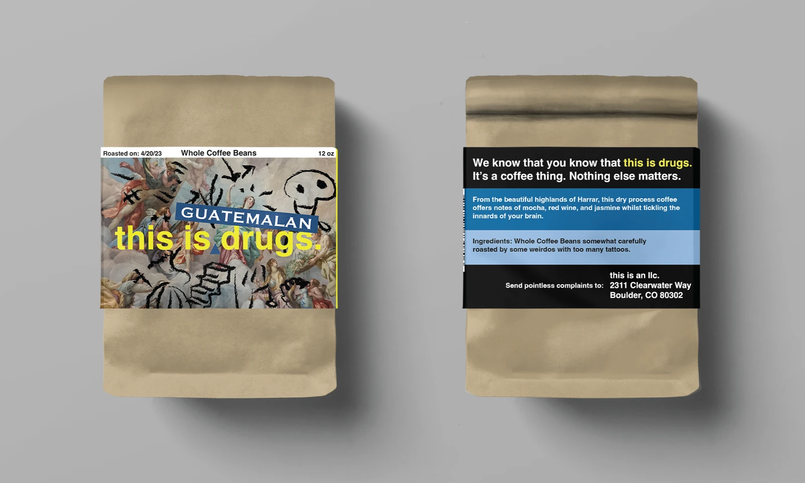
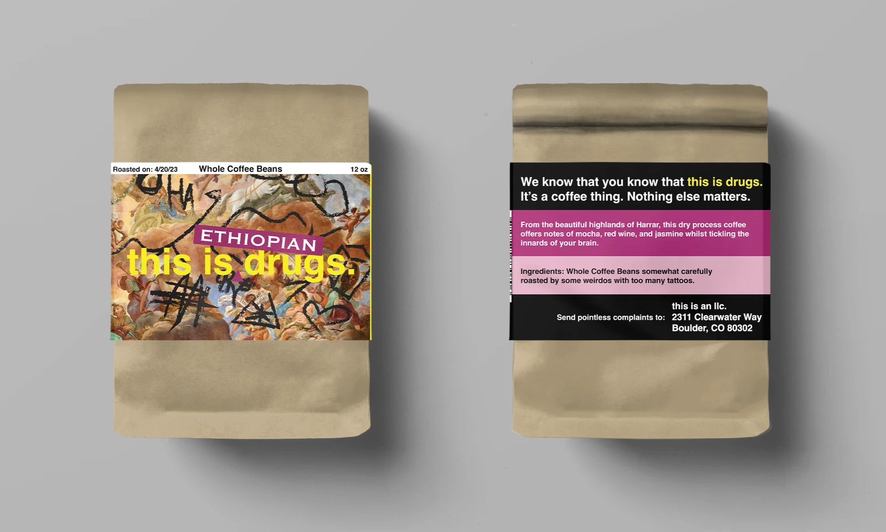
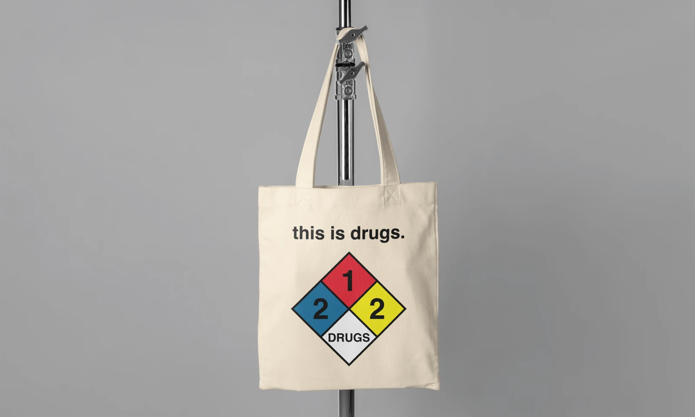
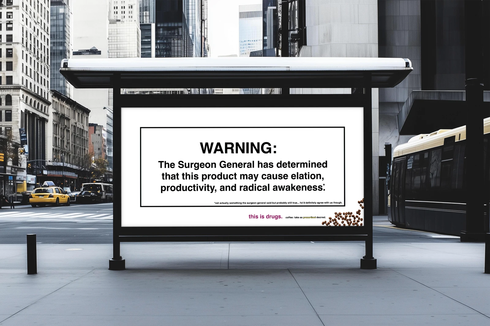

About
this is drugs. is a hypothetical coffee brand built around the blunt ritual of caffeine: a daily substance, a social habit, and a product people openly rely on.
The Brief
A coffee brand that says the quiet part out loud.
Created as a final project for ATLS 2300, the brand treats coffee less like a cozy lifestyle accessory and more like what it often is: a legal stimulant with its own culture, cravings, and rituals.
The goal was to build a provocative identity that could still work on shelf, using direct language, high-contrast packaging, and a simple graphic system for different origins.
The System
Deadpan copy, restrained structure, and packaging built to confront.
The identity leans into pharmaceutical cues without fully becoming medical. Stark typography, repeated warning-label rhythms, and minimal color help the bags feel both familiar and slightly uncomfortable.
- Naming centers the core idea in plain language: coffee as a normalized drug.
- Packaging juxtaposes rennaisance frescoes with playful graffiti and simple structural hierarchy.
- Mockups test how the system holds together across packaging, merch, and out-of-home placements.




Deliverables
A final brand presentation for the full concept.
The final deliverable is a presentation that documents the moodboard, content direction, packaging system, and mockups for the brand.
VIEW PRESENTATION →